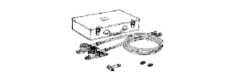
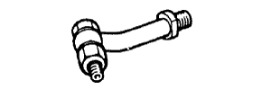
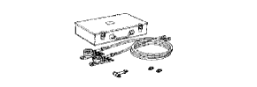

introduction
| OPG-210
| Otomatic transmission
Oil pressure -gaisetto
Treated as Banzai Co., Ltd.
| 
| (OPG-142)
| Adapter C
Treated as Banzai Co., Ltd.
|
| (OPG-GAUGE)
| Gauge ASSY
Treated as Banzai Co., Ltd.
| 
| ATG-100
| Otomatic transmission
Oil pressure -gaisetto
Treatment of Iyasaka Co., Ltd.
|
| (ATG-113)
| Adapter C
Treatment of Iyasaka Co., Ltd.
|
| (Atg-Gauge)
| Gauge ASSY
Treatment of Iyasaka Co., Ltd.
| |